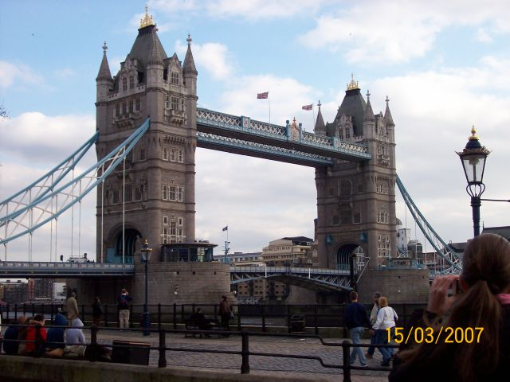
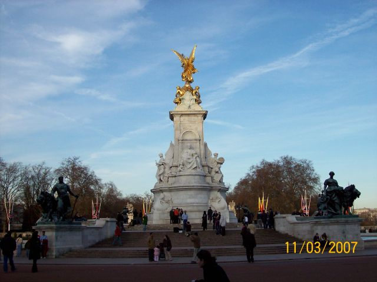

LONDRA
11/18 marzo 2007
Soggiorno - studio classe 3A Erica
Guerra Denise Bergonzoni Silvia
Guizzardi Giulia Mocciaro Maila
Donoiu Robert & Bulgarelli Stefano
Monti Giulia & Caseli Marika
Resca Giada & Bandiera Stefania
Cavicchi Michela & Della Pietra Monica
Tassi Vanessa & Otta Veronica